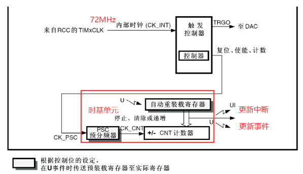
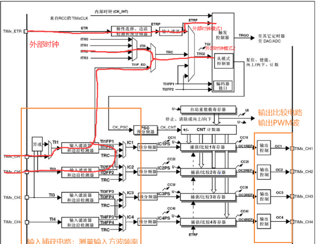
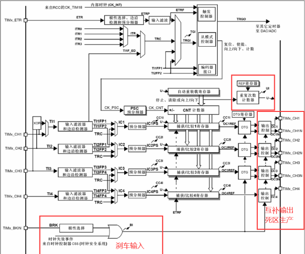
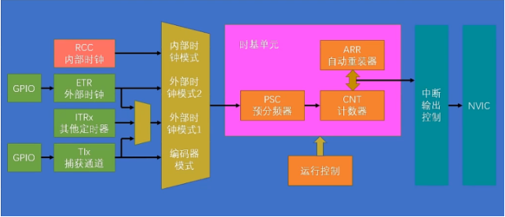

假期摆了几个月，一点没学（摆子是这样的），还有两天开学，打算这两天尽可能的把 stm32 标准库的内容给补完上传到博客，肝就完了。
# 一、TIM 简介
- TIM（Timer）定时器
- 定时器可以对输入的时钟进行计数，并在计数值达到设定值时触发中断
- 16 位计数器、预分频器、自动重装寄存器的时基单元，在 72MHz 计数时钟下可以实现最大 59.65s 的定时
- 不仅具备基本的定时中断功能，而且还包含内外时钟源选择、输入捕获、输出比较、编码器接口、主从触发模式等多种功能
- 根据复杂度和应用场景分为了高级定时器、通用定时器、基本定时器三种类型
# 二、定时器类型
| 类型 | 编号 | 总线 | 功能 |
|---|---|---|---|
| 高级定时器 | TIM1、TIM8 | APB2 | 拥有通用定时器全部功能，并额外具有重复计数器、死区生成、互补输出、刹车输入等功能 |
| 通用定时器 | TIM2、TIM3、TIM4、TIM5 | APB1 | 拥有基本定时器的全部功能、并额外具有内外时钟源选择、输入捕获、输出比较、编码器接口、主从触发模式等功能 |
| 基本定时器 | TIM6、TIM7 | APB1 | 拥有定时中断、主模式触发 DAC 的功能 |
1、基本定时器

预分频器
若预分频器 PSC 寄存器写 0，就是不分频或叫作 1 分频，输出频率 = 输入频率 / 1=72MHz；
若寄存器写 1，就是 2 分频，输出频率 = 输入频率 / 2=36MHz；
若寄存器写 2，就是 3 分频，输出频率 = 输入频率 / 3=24MHz……
实际分频系数 = 预分频器的值 + 1
该预分频器为 16 位，所以最大值为 65535，也就是 65536 分频
计数器
计数器可以对预分频后的计数时钟进行计数，计数时钟每来一个上升沿，计数器的值 + 1，该预分频器为 16 位，所以值可以从 0 加到 65535，再加便回到 0 重新开始。
所以计数器的值在计时过程中不断自增运行，当自增运行到目标值时，产生中断，那就完成了定时的任务。
所以还需要一个存储目标值的寄存器，即自动重装寄存器。
自动重装寄存器
自动重装寄存器也是 16 位，存储我们需要的计数目标。
计数值 = 自动重装寄存器 产生的中断叫做 “更新中断”，通往 NVIC，再配置好 NVIC 的定时器通道，那么定时器的更新中断就能得到 CPU 的响应了。
“更新事件” 不会触发中断，但可以触发内部其他电路的工作
2、通用定时器
通用定时器框图：

基本定时器仅支持向上计数模式，通用定时器和高级定时器支持向上计数、向下计数和中央对齐计数三种模式，常用向上计数模式。
3、高级定时器

高级定时器多一个重复计数器，当时基单元发生 update 事件时，重复计数器 + 1 计数
# 三、定时中断基本结构

# 四、定时器中断程序实例：
#include "stm32f10x.h" // Device header | |
void Timer_Init(void) | |
{ | |
//①开启时钟，选择时钟源 | |
RCC_APB1PeriphClockCmd(RCC_APB1Periph_TIM2,ENABLE); | |
TIM_InternalClockConfig(TIM2); | |
//②时基单元初始化 | |
TIM_TimeBaseInitTypeDef TIM_TimeBaseInitStructure; | |
TIM_TimeBaseInitStructure.TIM_ClockDivision = TIM_CKD_DIV1; | |
TIM_TimeBaseInitStructure.TIM_CounterMode = TIM_CounterMode_Up; | |
TIM_TimeBaseInitStructure.TIM_Period = 10000 - 1; //ARR 自动重装寄存器的值 | |
TIM_TimeBaseInitStructure.TIM_Prescaler = 7200 - 1; //PSC | |
TIM_TimeBaseInitStructure.TIM_RepetitionCounter = 0; // 重复计数器 | |
TIM_TimeBaseInit(TIM2,&TIM_TimeBaseInitStructure); | |
//③使能更新中断 | |
TIM_ClearFlag(TIM2,TIM_FLAG_Update); // 清除更新中断标志位 | |
TIM_ITConfig(TIM2,TIM_IT_Update,ENABLE); | |
//④配置 NVIC | |
NVIC_PriorityGroupConfig (NVIC_PriorityGroup_2); | |
NVIC_InitTypeDef NVIC_InitStructure; | |
NVIC_InitStructure.NVIC_IRQChannel = TIM2_IRQn; | |
NVIC_InitStructure.NVIC_IRQChannelCmd = ENABLE; | |
NVIC_InitStructure.NVIC_IRQChannelPreemptionPriority = 2; | |
NVIC_InitStructure.NVIC_IRQChannelSubPriority = 1; | |
NVIC_Init(&NVIC_InitStructure); | |
//⑤启动定时器 | |
TIM_Cmd(TIM2,ENABLE); | |
} | |
void TIM2_IRQHandler(void) | |
{ | |
if (TIM_GetITStatus(TIM2,TIM_IT_Update) == SET) | |
{ | |
TIM_ClearFlag(TIM2,TIM_FLAG_Update); | |
} | |
} |